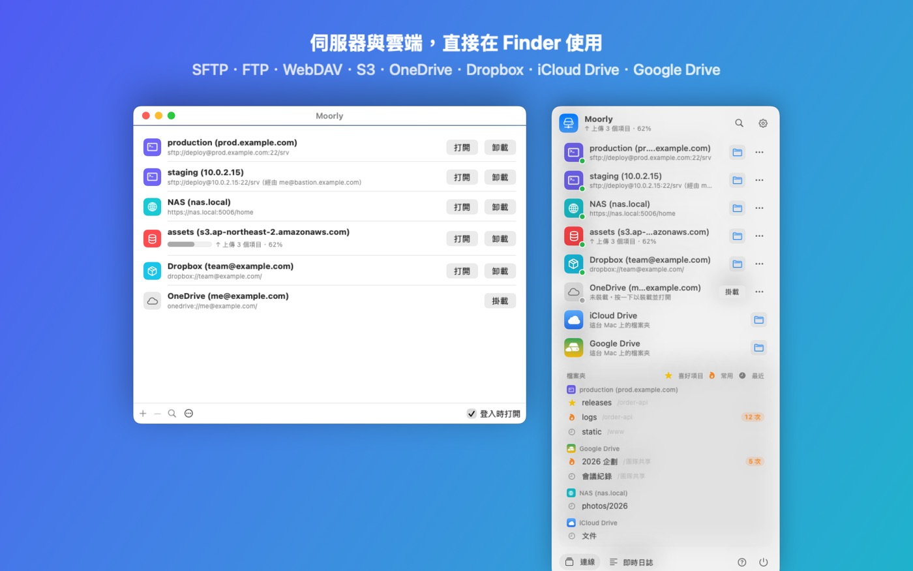
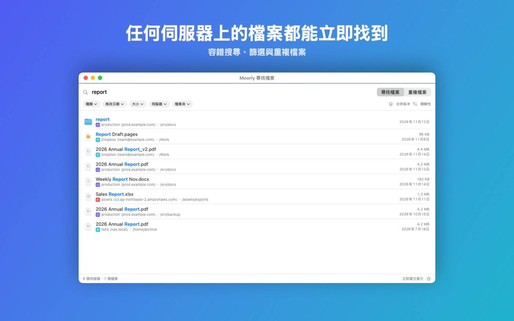
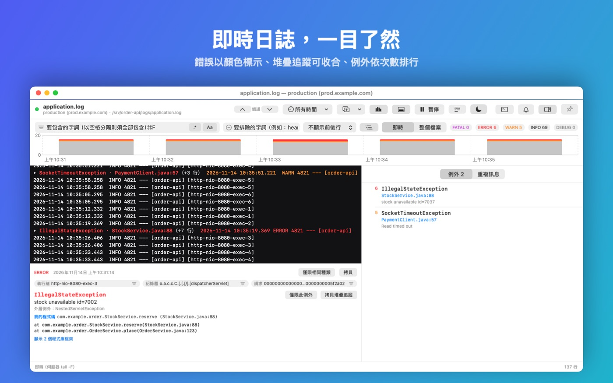

Moorly 使用手冊
Moorly 會將 SFTP、FTP、WebDAV 和 S3 伺服器，以及 OneDrive 和 Dropbox 放在 Finder 側邊欄中，讓你像使用 Mac 上的檔案一樣打開和儲存檔案。 它也能搭配 Mac 上現有的檔案夾使用，例如 iCloud 雲碟或 Google 雲端硬碟 App 的檔案夾。
開始使用

- 按一下選單列中的 Moorly 圖像，然後打開「連線」。
- 按一下「+」（⌘N），然後選擇服務。
- 伺服器（SFTP、FTP、WebDAV、S3）：輸入位址、使用者名稱和密碼或密鑰，然後按一下「測試連線後儲存」。
雲端服務（OneDrive、Dropbox）：按一下「使用 Microsoft（或 Dropbox）登入⋯」。登入頁面會在瀏覽器中打開。登入並允許取用後，當瀏覽器詢問是否要打開 Moorly 時，按一下「打開」，確認名稱後按一下「儲存」。 - 在列表中按一下「掛載」。連線會出現在 Finder 側邊欄的「位置」下方。
~/.ssh/config 的伺服器清單。SFTP 伺服器會在第一次掛載時確認。SFTP 提示
- 使用「從 ~/.ssh/config 輸入⋯」來沿用現有的主機設定。
- 如需經由跳板主機連線，請在「進階 › 跳板主機」中輸入。
- 掛載伺服器根目錄（
/）時，/proc和/sys會被隱藏（它們是持續變動的虛擬檔案夾）。
選單列面板
按一下選單列中的 Moorly 圖像來打開面板。（按住 Control 鍵並按一下或按住 ⌥ 鍵並按一下，可打開傳統選單。）
- 伺服器：每個圖像上的圓點會顯示狀態——綠色為已掛載、橘色為有問題、灰色為未掛載。按一下列即可打開你上次檢視的檔案夾。「⋯」中有「卸載」、「重新整理」、「分析磁碟使用量」、「在終端機中打開」等項目。
- 檔案夾：每個伺服器都有「★ 喜好項目 · 🔥 常用 · 🕘 最近使用」。將指標停留在檔案夾上並按一下 ☆，即可加入或移除喜好項目。
- 「常用」會列出過去 30 天內打開至少兩次的檔案夾，打開次數最多的排在最前面。可在「設定 › 選單」中設定每個伺服器要顯示的數量。
- 由 Moorly 打開的檔案夾會保留瀏覽記錄，因此 Finder 的 ◀（上一頁）和 ⌘↑ 可帶你前往上層檔案夾。
- 傳輸：按面板上方的 ⇅（或右鍵選單中的傳輸⋯）查看上傳與下載，包含進度、失敗原因與再試一次，以及依伺服器暫停。
- 檔案夾同步：從伺服器的…選單或右鍵選單中的檔案夾同步⋯，比較 Mac 檔案夾與伺服器檔案夾，只上傳或下載有變更的檔案。按比較可先預覽；接收端另外變更過的檔案不會被覆寫，而會標示為衝突。
伺服器很多時：樹狀與標籤頁
在設定 › 選單列面板 › 顯示方式中選擇列表、樹狀或標籤頁。
- 群組：在連線編輯視窗的群組欄位，或伺服器的… › 群組中設定（例如：正式、開發）。沒有群組的伺服器會自動歸入伺服器（SFTP、FTP、WebDAV）與雲端（S3、OneDrive、Dropbox），本機檔案夾則另成一組。
- 樹狀：用 ▸ 收合或展開群組與伺服器。展開伺服器後，其喜好項目、常用與最近使用的檔案夾會顯示在正下方。收合狀態會被記住。
- 標籤頁：點選上方的標籤頁（全部或各群組），只顯示該群組的伺服器與檔案夾。
- 伺服器與本機檔案夾合計 9 個以上時，上方會出現依伺服器名稱篩選欄位。列表比螢幕高時，會在面板內捲動。
拖移以上傳
在 Finder 中拿起檔案時，選單列圖像下方會出現一個小小的「使用 Moorly 上傳」區域。將檔案拖移到該區域上，即可看到每個伺服器的檔案夾。
- 放到檔案夾上即可上傳到該處。如果已有相同名稱的檔案，Moorly 會保留兩者（「名稱 2」）。
- 放到伺服器標題上即可選擇上傳位置。
- 若要立即顯示完整列表，請更改「設定 › 拖放面板 › 樣式」。
本機檔案夾（iCloud 雲碟 · Google 雲端硬碟 · Box · 共享檔案夾）
像使用伺服器一樣使用 Mac 上現有的檔案夾。它們會出現在「最近使用」、「常用」和「喜好項目」中，可接受拖放的檔案，也會納入檔案搜尋。
- 按一下「設定 › 本機檔案夾 › 加入檔案夾⋯」。
- 選擇檔案夾，然後按一下「加入此檔案夾」。（基於 macOS 安全性要求，每個檔案夾都需要你選擇一次。）
| 要加入的項目 | 選擇 |
|---|---|
| iCloud 雲碟 | 「加入 iCloud 雲碟⋯」按鈕（或 ~/Library/Mobile Documents/com~apple~CloudDocs） |
| Google 雲端硬碟 | 安裝 Google 雲端硬碟 App，然後選擇 ~/Library/CloudStorage/GoogleDrive-你的帳號 |
| Box · pCloud · MEGA | 安裝 App，然後選擇它建立的檔案夾（通常位於 ~/Library/CloudStorage 中） |
| 公司共享檔案夾（SMB） | 在 Finder 中使用「前往 › 連接伺服器」連線，然後選擇 /Volumes/共享名稱 |
Finder 快速鍵選單
在以 Moorly 掛載的伺服器中，按住 Control 鍵並按一下檔案或檔案夾，即可看到「Moorly：」項目。
| 項目 | 選取範圍 | 功能 |
|---|---|---|
| 顯示即時日誌 | 1 個檔案 | 像 tail -F 一樣追蹤伺服器上的日誌 |
| 尋找相同檔案 | 1 個檔案 | 在你的伺服器上尋找內容相同的檔案 |
| 在「終端機」中打開 | 1 個項目 | 在該檔案夾中開啟 ssh 工作階段（SFTP） |
| 分析磁碟使用量 | 1 個檔案夾 | 查看哪些檔案夾和檔案佔用空間 |
| 加入喜好項目 | 1 個檔案夾 | 加入選單列面板的 ★ |
| 拷貝分享連結 | 1 個項目 | S3、OneDrive 或 Dropbox 的分享連結 |
| 在伺服器上壓縮為 tar.gz／zip、在伺服器上解壓縮、在伺服器上複製 | 1 個或以上 | 直接在伺服器上執行，無需下載（SFTP） |
| 一律保留在這部 Mac 上／停止保留 | 1 個以上 | 事先下載並持續同步伺服器上的變更，即使無法連線伺服器也能開啟。選擇檔案夾時，裡面的所有項目都會套用 |
如果某個動作不適用於該伺服器類型，Moorly 會告訴你原因。
Cryptomator 保險庫（加密檔案夾）
檔案會先在這台 Mac 上加密再上傳。伺服器只會儲存無法辨識的名稱與內容，因此雲端業者、伺服器管理員或盜用你帳號的人都看不到內容。保險庫採用標準 Cryptomator 格式，Cryptomator App（Windows、iPhone、Android）也能開啟同一個保險庫。
- 在面板中按一下伺服器旁的 … › Cryptomator 保險庫⋯（或在連線視窗中按 … › 開啟或建立 Cryptomator 保險庫⋯）。
- 開啟現有保險庫：輸入保險庫檔案夾（含有
vault.cryptomator的檔案夾）與密碼。建立新保險庫：輸入要建立的檔案夾與至少 8 個字元的密碼。 - 保險庫會以獨立連線出現在 Finder 中，側邊欄名稱前會加上 🔒，裡面的檔案夾與檔案圖像也會有鎖頭標記，方便區分。在裡面就像一般檔案夾一樣開啟和儲存。
- 隱藏的是檔名與內容。檔案數量、大約大小與修改時間仍可在伺服器上看到。
- 保險庫內的檔案無法在伺服器上直接壓縮，也不能使用分享連結或即時日誌（伺服器無法讀取內容）。
- 支援格式：Cryptomator 保險庫格式 7 與 8，加密方式為 AES-GCM（Cryptomator 1.7 起的預設）或 AES-CTR+HMAC（舊保險庫）。用舊版 Cryptomator 建立的保險庫也能直接開啟使用。
- 鎖定：在面板中按保險庫旁的 … › 鎖定保險庫。會取消裝載並從這台 Mac 刪除金鑰，下次開啟時會要求輸入密碼。在設定 › Cryptomator 保險庫中，可設定螢幕鎖定或 Mac 睡眠時自動鎖定。
- 每天重新驗證：在保險庫的 … › 重新開啟時 中選擇 每天鎖定，以 Touch ID 解鎖，解鎖一天後會自動鎖定，下次只要用指紋就能開啟。沒有 Touch ID 的 Mac 會以 Mac 登入密碼（或 Apple Watch）驗證。選擇 以保險庫密碼解鎖 則每次都會要求輸入保險庫密碼。
- 更改密碼：… › 更改保險庫密碼⋯。檔案不會重新加密，只會更改金鑰檔，因此立即完成。Cryptomator App 也會使用新密碼。
- 復原金鑰：建立新保險庫時會顯示（之後可從 … › 顯示復原金鑰⋯ 查看）。忘記密碼時，在更改保險庫密碼⋯中選擇復原金鑰即可設定新密碼。這是 Moorly 格式，與 Cryptomator App 的單字復原金鑰不同。
檔案搜尋

按一下選單列面板中的 🔍，或在任何地方按下 ⌃⌥⌘F。即使是你未打開過的檔案夾，也能依名稱找到檔案。
- 能容許空格和拼字錯誤。
- 使用搜尋欄位下方的「全部／檔案／檔案夾」，並依種類、日期、大小或檔案夾進行過濾。
- 條件：
ext:pdfsize:>100mbkind:folderfolder:/var/logserver:proddate:week - 「重複檔案」標籤頁可找出位於多個伺服器上的相同檔案。
- 開啟右上角的 📌，可讓視窗保持在其他 App 上方。
- 在「設定 › 尋找檔案」中選擇每個伺服器要建立索引的內容。SFTP 和 FTP 會略過
/usr、/proc和/var/log等系統檔案夾。
即時日誌

選單列面板 › 「即時日誌 › 打開日誌檔⋯」，或按住 Control 鍵並按一下檔案 › 「Moorly：顯示即時日誌」。
- 路徑或名稱：輸入路徑（例如
/var/log/syslog），或只輸入名稱（例如app），然後從下方列表中選擇（最近修改的排在最前面）。 - 輸入檔案夾即可追蹤該檔案夾及其子檔案夾中最近修改的檔案。出現較新的檔案時（例如新的每日日誌），Moorly 會在 30 秒內切換到該檔案。你也可以加上名稱：
/app/log/*api* - 選擇多個伺服器，即可依時間合併它們的日誌。
- 過濾條件、排除字詞、前後文行數、依層級標示顏色、重複訊息分組、時間軸圖表、暫停（⌘P）、深色 🌙 以及保持在最上層 📌。
- 🔔 監看：出現特定字詞或錯誤激增時收到 macOS 通知（關閉視窗後仍會持續運作）。
tail -F，因此新的行幾乎會立即出現。對於無法執行指令的帳號及其他伺服器類型，Moorly 每 1.5 秒讀取一次新資料。終端機（iTerm2 · 終端機）
- 在連線列表中按住 Control 鍵並按一下 SFTP 伺服器 › 「在 iTerm2 中打開」（或使用面板中的「⋯」）。可在「設定 › 終端機」中選擇 App。
- 「設定免密碼登入⋯」會為這部 Mac 建立 SSH 密鑰（預設為
~/.ssh/moorly_ed25519），並在伺服器的~/.ssh/authorized_keys中加入一行公開密鑰。之後終端機就不會再要求輸入密碼。
權限——macOS 為什麼會詢問？
| macOS 的詢問 | 原因 |
|---|---|
| 「Moorly 想要控制 Finder」 | 為了記錄最近使用和常用的檔案夾，Moorly 會檢查最前方的 Finder 視窗所顯示的檔案夾——僅在 Finder 位於最前方時進行，且絕不會動到你的檔案。若要關閉：「設定 › 選單 › 記錄在 Finder 中打開的檔案夾」 |
| 「Moorly 想要控制 iTerm2（終端機）」 | 在終端機中打開伺服器時，用來傳送 ssh 指令。 |
| 檔案夾選擇器 | 由你明確選擇 Moorly 可使用的檔案夾，例如本機檔案夾或 SSH 密鑰的儲存位置。 |
| 通知 | 日誌監看提醒。 |
如果你先前拒絕了，請在「系統設定 › 隱私權與安全性 › 自動化」中更改。
免費版與 Pro 版
免費版包含所有功能，每種連線類型（SFTP、FTP、WebDAV、S3、OneDrive、Dropbox）各可使用一個連線，另可使用一個本機檔案夾與一個日誌監看與一個 Cryptomator 保險庫。一次性的「Moorly Pro」App 內購買可解除這些限制，連線、本機檔案夾、日誌監看與保險庫數量不受限制。
常見問題
儲存 OneDrive 連線時顯示「此帳號沒有 OneDrive」
這個個人帳號從未打開過 OneDrive。請先在瀏覽器中登入 onedrive.live.com 一次，然後再試一次。公司或學校帳號需要 OneDrive（Microsoft 365）授權。
我的公司 Microsoft 帳號被封鎖（「需要管理員核准」）
你的組織封鎖了外部 App。請要求管理員核准 Moorly。
列表中出現警告（⚠︎）
無法連接伺服器，或你的登入已過期。請在面板中選擇「⋯」›「再試一次」，或按一下警告以重新登入。
在 Finder 中打開的檔案夾沒有出現在「最近使用」中
請確定已允許控制 Finder（請參閱「權限」）。如果面板顯示橘色提示，請按一下「打開「自動化」設定⋯」。
快速鍵選單中沒有 Moorly 項目
這些項目只會出現在以 Moorly 掛載的伺服器中，不會出現在 iCloud 雲碟等本機檔案夾中。
經由跳板主機的 SFTP 連線失敗
跳板主機的 sshd 必須允許 TCP 轉送（AllowTcpForwarding yes，此為預設值）。主機欄位請輸入從跳板主機看到的位址。
我沒有收到日誌監看通知
請在「系統設定 › 通知 › Moorly」中允許通知。
聯絡我們
請寄送電子郵件至 giveing7777@gmail.com，或在 GitHub Issues 上提出問題，並附上你的 macOS 版本和發生的情況。請勿附上密碼或伺服器位址。